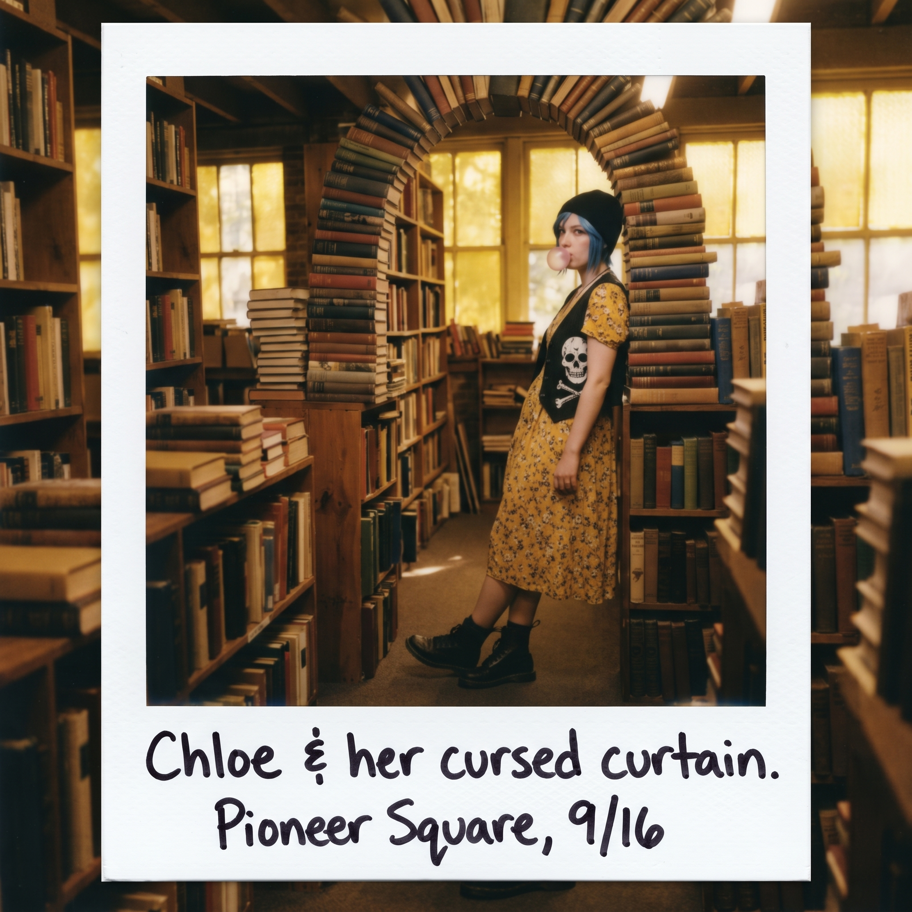

碎花裙受難記


一、地下書店的無我狀態
先鋒廣場那間開了上百年的地下舊書店,踩上木地板便發出一陣陣嘎吱聲響,空氣裡瀰漫著黴味、舊紙張與雪松木混合的氣息。
Max 一踏進門,整個人瞬間進入某種「無我狀態」。
她在堆滿灰塵的藝術區,翻出一本 1970 年代絕版的攝影季刊,裡面收錄著黛安·阿巴斯未公開的邊緣人物肖像筆記;又在角落一堆泛黃紙箱底部,挖到一本 1950 年代祿來雙反相機的拍攝手冊,裡面還夾著前任主人手寫的光圈測光筆記。
她捧著那本破舊的手冊,眼睛亮得像是挖到了金礦,呼吸都跟著急促起來,完全忘記了身後那個穿著荒謬造型、瀕臨崩潰的藍髮少女。
二、威逼利誘
昨晚在派克市場,Max 憑著那張足以社死的飛魚驚魂照,成功換來了今天這場「碎花裙陪逛」的協議。
Chloe 站在古著店試衣間門口,死死盯著手裡那條 1990 年代 Grunge 風格的黃底碎花棉質連衣裙,一臉生無可戀。
「妳確定要用那張照片威脅我一整天?」她做最後的掙扎。
Max 只是笑瞇瞇地舉起手機,螢幕上,正是那張定格了她「瞪大眼睛、嘴巴張成O形、雙手手足無措」的災難級表情。
「妳看,」她語氣輕快,「這張如果傳到 Warren 和 Kenji 的群組裡,妳猜會收穫幾個表情包?」
Chloe 咬牙切齒地認命換上了那條裙子。
三、車禍現場
碎花裙下面,是她洗得發白的黑色骷髏頭背心內襯;裙擺底下,露出一雙沾滿修車機油、鞋頭鐵皮磨損的厚重馬丁靴;手臂上大片的紋身、脖子上晃盪的子彈殼項鍊,搭配頭頂那頂反戴的毛線帽,把一條原本溫柔田園的碎花裙,硬生生穿出了一種「隨時準備去炸五角大樓」的末日暴徒既視感。
Chloe 走起路來,像是膝蓋被焊上了鋼板,完全不會打彎,兩條長腿邁著誇張的外八字步伐,嘴裡嚼著口香糖,雙手插不進裙子那對裝飾性的假口袋,只能無處安放地抱在胸前。
「Maxine!」她忍無可忍地低聲抗議,「老娘的下半身在漏風!這玩意兒甚至沒有真口袋能裝我的折疊刀和打火機!這根本不是衣服,這是一塊被詛咒的窗簾布!」
「妳走路的樣子很有特色,」Max 頭也不抬,忙著翻找書架,「像某種瀕臨絕種的機械朋克恐龍。」
「妳給我閉嘴,繼續挖妳的破書。」
四、朋克式護花
正逛著,一個戴著金絲眼鏡、穿著格紋襯衫的文青店員注意到 Max 手裡那疊絕版書,湊上前來,熱情地想推銷一本標價不菲的限量畫冊。
「這位小姐,」他推了推眼鏡,語氣殷勤,「如果您對攝影史感興趣,我們後面還有一批更稀有的——」
話還沒說完,Chloe 已經一個箭步擋到 Max 身前,一隻腳直接踩上旁邊堆著古董字典的木箱,雙手叉腰,碎花裙擺被帶得高高飛揚,那副兇神惡煞的架勢,跟身上這身溫柔造型形成了某種驚悚的荒謬對比。
「嘿,眼鏡仔,」她瞇眼,聲音壓得低沉,「離她遠點,這丫頭挑書的時候不喜歡被蒼蠅打擾,懂?」
店員被這突如其來的氣勢嚇得往後一縮,推了推眼鏡,結結巴巴地應了一聲,抱著懷裡的書連滾帶爬地縮回了收銀台後方。
Max 這才回過神,看著眼前這一幕,忍不住笑出聲:「妳這身打扮,配上這句台詞,反差感十足。」
「管它什麼反差,」Chloe 收回腳,一臉理所當然,「嚇跑蒼蠅要緊。」
五、終極留影
臨走前,兩人路過書店深處一堵由舊精裝書壘成的拱門,午後的夕陽正好透過泛黃的玻璃窗斜斜灑落,落在 Chloe 身上。
她靠在書架邊,一臉不情不願地扯著裙擺,嘴裡吐出一個粉色的泡泡糖,眼神裡混雜著無奈、暴躁,和一絲連自己都沒察覺的縱容。
Max 眼疾手快地舉起隨身的拍立得,「喀嚓」一聲按下快門。
白色相紙緩緩吐出,漸漸顯影出這個畫面——全西雅圖最兇狠的藍髮混蛋,乖乖穿著一條碎花裙,陪女友逛完了一整個下午的舊書店。
「把這張底片給我燒了,」Chloe 一把奪過照片,瞪著上面那張自己都覺得滑稽的臉,語氣裡帶著咬牙切齒的嫌棄。
Max 也沒堅持要回,只是笑著,看她那雙布滿機油痕跡的手,把那張照片,小心翼翼地夾進了隨身那件破舊皮夾克的內袋最深處——藏在心口最靠近的地方。
Max 看到這個動作,唇角悄悄勾起一抹了然的笑意,沒有戳破,只是挽起她的手臂,一起走出了那間瀰漫著舊書香氣的地下書店,融進先鋒廣場漸暗的暮色裡。